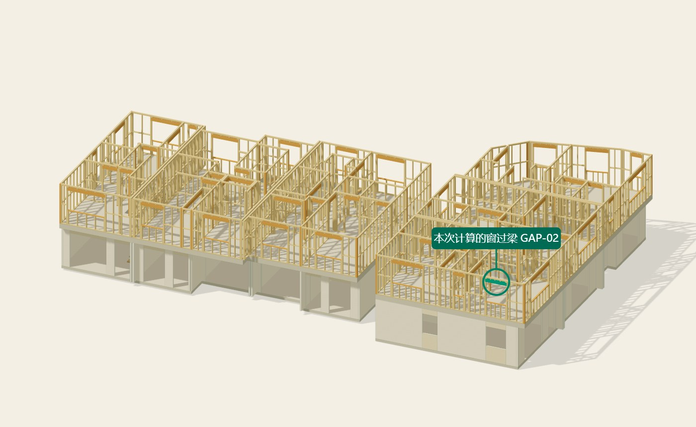

这次算的是哪根过梁？
看下图的绿色横梁和圆圈：本次算的是上层这扇 1200 mm 宽窗上方的过梁。三张图指向同一根梁。
当前计算范围：这一处窗洞（GAP-02）。其余门窗过梁尚未在本次计算中逐根完成设计。

点击图片可放大。也可打开完整可旋转模型（打开后需自行定位）。
定位图来自现有建筑模型。画面中的梁仍为 2/190×45 mm；下方讨论的 2/240×45 mm 是待确认候选，尚未替换到模型。
找到这根梁后，再确认按哪种风条件继续
这扇窗上方的梁已经算了一版。当前只请您决定下一步的计算方向。资料核对、计算和节点选型继续由我们完成。
门窗按最不利情况考虑，是您的要求。地形对风的额外放大，是我们另加的假定，还没确认为这个地址的实际条件。所以现在不能直接说“190一定不够，必须换240”。
请选择 A、B，或提出其他方法
回复我们一句话就可以
尚未选择。可点上方A/B，也可提出其他方法。
下面是判断依据，需要时再展开。
190与240，分别算出了什么？
百分比表示“梁要承担的弯矩，占计算承载能力的多少”。超过100%，表示该计算条件下不满足。
| 梁尺寸 | 采用哪组风 | 抗弯占比 | 这说明什么 |
|---|---|---|---|
| 两片190×45 | 基准假定 | 38.2% | 这组假定下够用，尚非现场确认结果 |
| 两片190×45 | 额外放大的假定 | 113.4% | 这组假定下不满足 |
| 两片240×45 | 额外放大的假定 | 71.0% | 梁在这些假定下算得过，连接另核 |
两组情景都按最坏门窗考虑。基准风也含待核假定，不能把“基准够用”直接当成实际190可用；同样不能把额外放大的结果当成必须采用240的证据。
如果选择B，多出的50mm会影响哪里？
先检查空间，再决定怎么放
图中固定梁顶，240比190向下多占50mm。
若希望保留窗高，我们先核对梁上方是否有足够空间；目前尚未确认。空间不足时，再与建筑师确认窗洞是否需要调整。
这项放在选择B后的后续工作中，现在不用同时拍板。
如果选择B，连接还需要核什么？
本次放大风条件下，梁端向上的拉力需求为左端12.61kN、右端9.77kN。连接尚未完成验算。
接下来确定两片木梁如何连在一起、梁端如何固定，以及柱和下部锚固是否满足要求。您可指定MiTek节点，也可由我们先提出候选供确认。
此前Type H按相应条件换算的容量10.8kN，低于上述左端需求；具体容量还依赖木种、钉和安装方式。这个比较不是对现场连接已失效的判定。
展开查看计算条件与数字
地形系数Mt=1.72是额外保守假定，不是本地址实测值；基准Mt=1.00也尚未确认为现场条件。ULS为强度验算，SLS为正常使用验算。扩大情景的风压约为基准的2.96倍。
| 参数 | 基准假定 | 扩大假定 |
|---|---|---|
| ULS风速 | 50.40m/s | 86.69m/s |
| SLS风速 | 41.44m/s | 71.28m/s |
| Mt | 1.00 | 1.72 |
| 门窗最坏净风压系数 | −2.1 / +0.85；普通檩条传力分支 | |
本次传力按MC760屋面→檩条→S2屋架→过梁；不覆盖直接支承覆面等其他局部风压分支。屋架传入的恒载上值为1.283kN，墙头另取0.30kN/m，仍含明确设计余量。上拔时不借这些暂估重量抵消风，仅计梁自身重量。
| 双240×45，扩大情景 | 需求 | 容量 / 限值 |
|---|---|---|
| 弯矩 | 6.87kN·m | 9.68kN·m |
| 剪力 | 12.66kN | 27.65kN |
| 挠度，计剪切变形 | 1.63mm | 4.15mm，暂用L/300 |
本页消费r11条件计算摘要，不执行计算。梁结果以SG8干材、双拼共同受力、端部侧向约束及已列荷载路径成立为前提；承压、柱和下部锚固另核。